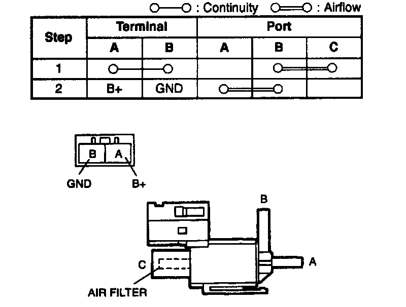
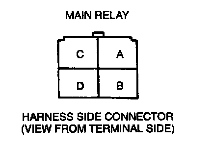

EGR Boost Sensor Solenoid Valve
Simulation Teat1. Carry out the "EGR Control Inspection".
2. If not as specified, perform the further inspection for the EGR boost sensor solenoid valve.
Airflow Inspection
NOTE:
- Perform the following test only when directed.
1. Disconnect the negative battery cable.
2. Remove the EGR boost sensor solenoid valve.

3. Inspect airflow between each port under the following conditions.
4. If not as specified, replace the EGR boost sensor solenoid valve. If as specified but the Simulation Test is failed, inspect following:
Vacuum hose improper routing, kinks or leakage.
Open circuit
- Ground circuit (EGR boost sensor solenoid valve connector terminal B and PCM connector terminal 3T)

- Power circuit (EGR boost sensor solenoid valve connector terminal A and main relay connector terminal D through common connector)
Short circuit
- EGR boost sensor solenoid valve connector terminal B and PCM connector terminal 3T to ground
5. Connect the negative battery cable.